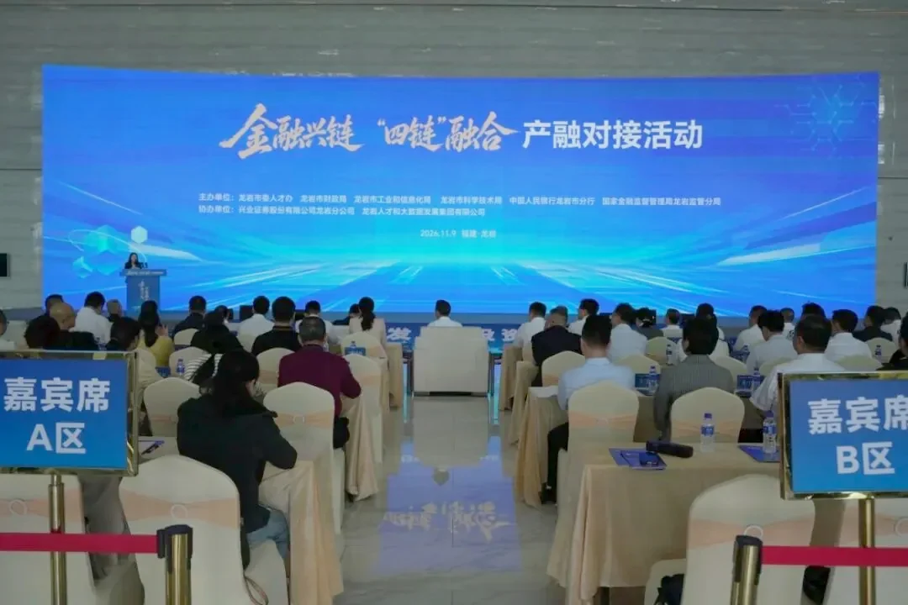
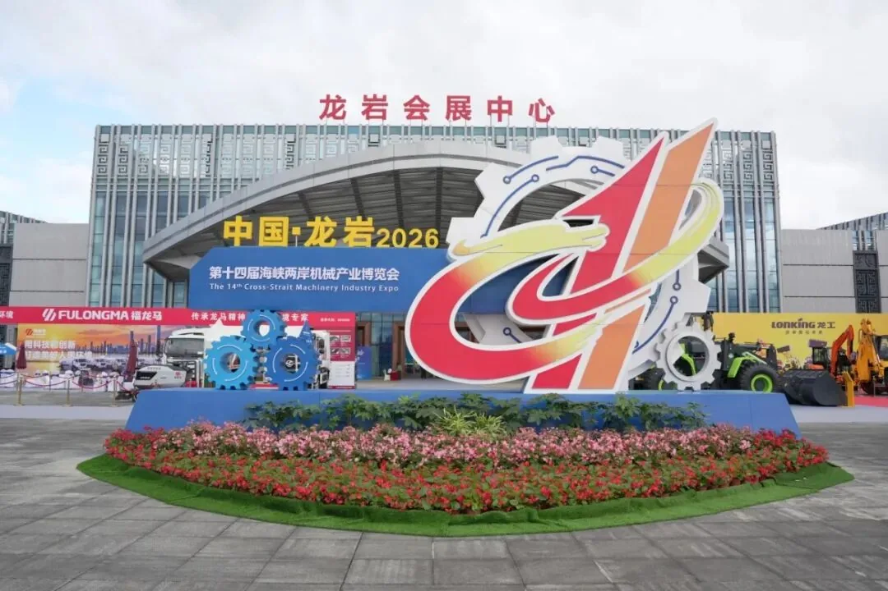

QL Metal Fiber at the 14th Cross-Strait Machinery Industry Expo
Our general manager presented the FTS-CL600 coalescing oil removal unit to investors and lenders at the expo's industry–finance matchmaking session in Longyan.
Source: QL Metal Fiber official WeChat account (in Chinese) · View original

On the morning of 9 November, the industry–finance matchmaking session of the 14th Cross-Strait Machinery Industry Expo opened at the Longyan Convention and Exhibition Center. As a national “Little Giant” specialised enterprise, Fujian QL Metal Fiber took part alongside government, industry and financial institutions.
Presenting a provincial first-of-its-kind unit
In the financing roadshow, General Manager Huang Haochen presented our project on the development and industrialisation of a high-efficiency metal coalescing oil–water separator, showing financial institutions and investors where the company stands in environmental equipment.
Finer separation. A surface-modification process captures and separates oil droplets below 1 µm, addressing the low efficiency and high running cost of conventional emulsified-oil treatment.
No more clogging. High precision, high throughput, low cost and high oil removal, without the clogging and frequent replacement that limit conventional oil-removal media.
60% smaller. A more compact structure cuts equipment volume by 60%, which suits older plants and retrofit projects where space is tight.
Our FTS-CL600 metal coalescing oil removal unit has been recognised as a provincial first-of-its-kind major technical equipment in Fujian. It combines economic return with compliant discharge, and it is now moving from pilot sites into wider service.
Questions buyers ask about the unit
How often do the internals need replacing? They do not. The coalescing elements stay in service, so there is no consumable cost.
How long does the core material last? Our longest-running installation has operated for five years without replacing it.
Is it expensive to run? No. The only power consumer is one pump, and the elements need flushing about once a year.
On the expo floor
QL also exhibited in the newly opened Longyan Industrial Showroom (Hall C South), alongside more than 50 established companies from the region, showing our products and process capabilities.
From 2 µm metal fiber to a first-of-its-kind separation unit, we are closing the gap between material and installed equipment.

